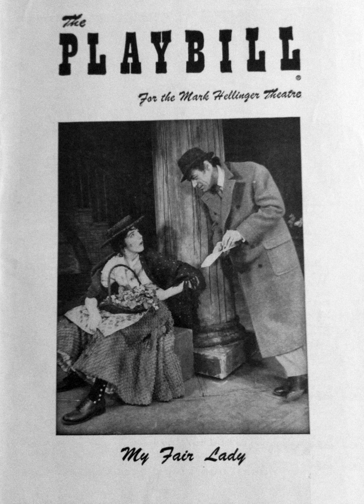
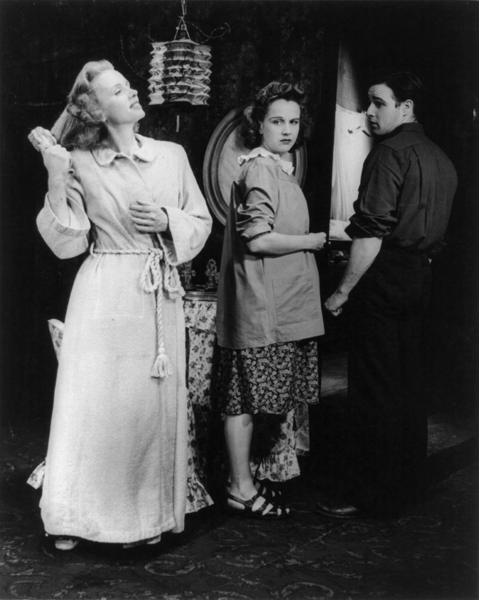

drama collections
american drama
OPENING
Theater in the United States is part of the old European theatrical tradition and has been heavily influenced by the British theater. The central hub of the American theater scene is Manhattan, with its divisions of Broadway, Off-Broadway, and Off-Off-Broadway. Many movie and television stars have gotten their big break working in New York productions. Outside New York, many cities have professional regional or resident theater companies that produce their own seasons, with some works being produced regionally with hopes of eventually moving to New York. U.S. theater also has an active community theater culture, which relies mainly on local volunteers who may not be actively pursuing a theatrical career.


-